Dynamic Surfaces and Geospatial Processes
Helena Mitasova


J.Hofierka, A.Petrasova, V. Petras, B.Harmon, P.Tabrizian, J.Jeziorska


Dynamic Digital Earth
- Digital Earth vision is now a reality: Earth is mapped at many spatial and temporal scales from global by satellites to local microscale by drones
- Only fraction of collected data is used to full potential
- Geospatial analytics and modeling is deployed to use these data to improve disaster response, water and food security, everyday life and well being
- Geospatial surface modeling - foundation for many methods and tools
We will take an incomplete tour through evolution of surface modeling from its beginnings to current state/applications
Ocean Currents2018 Cameron Beccario
The beginnings
Pioneering concept of dynamic spatial surfaces
Waldo Tobler:
geospatial phenomena as fields - scalar, vector and tensor
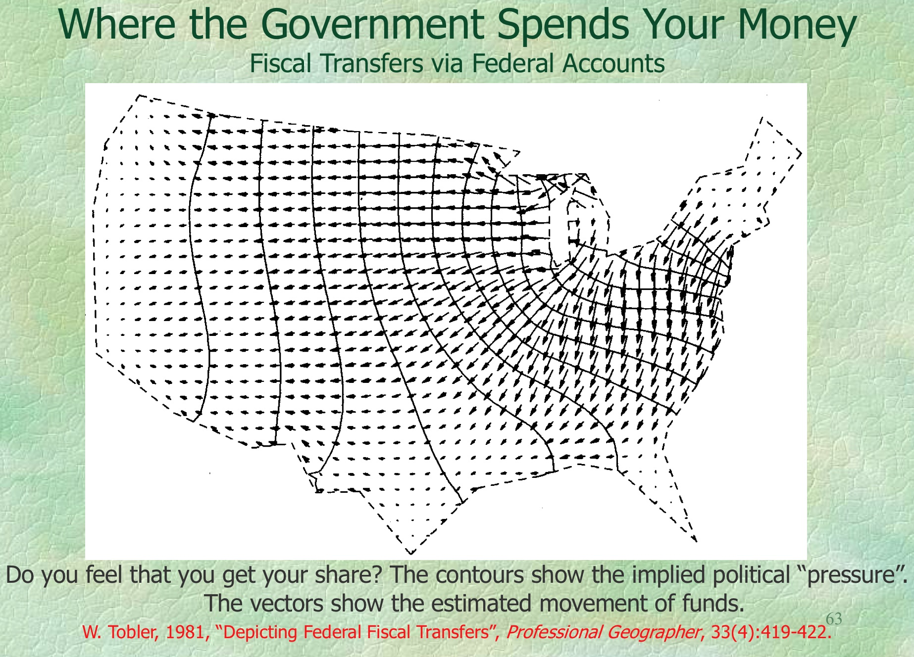 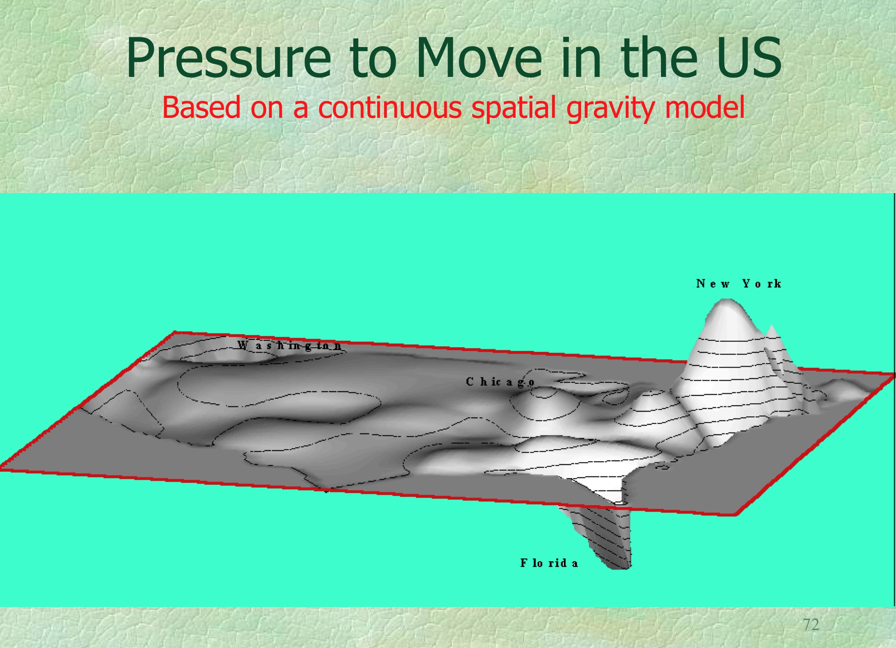
Images from Professor Tobler's slides
Theoretical foundations: terrain analysis
Terrain as continuous field z=f(x,y),
represented by isolines, manually deriving secondary fields
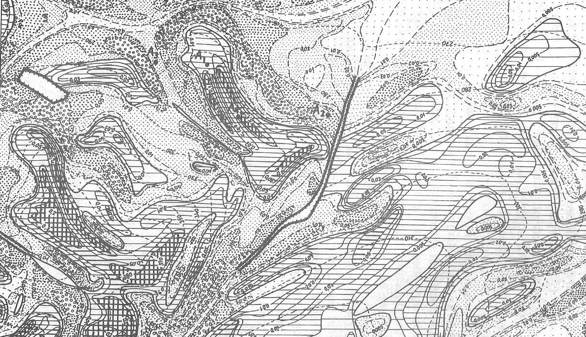
Profle Curvature isolines (Krcho 1973),
Digital terrain modeling with splines
Spatial interpolation by Regularized Spline with Tension (RST) method: from scattered points to regular grids, with simultaneous derivation of topographic parameters
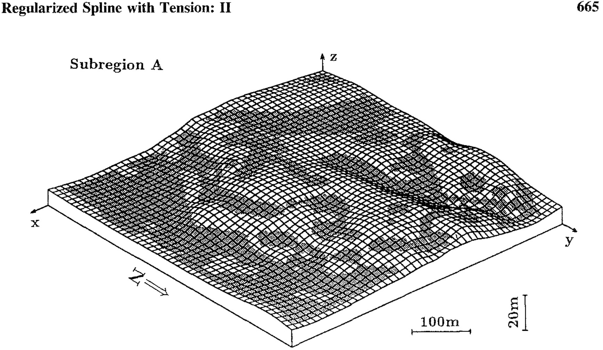
Profle Curvature draped over mesh surface, (Mitasova, Mitas, Hofierka 1993)
Implementation in open source GRASS GIS
Method became available to broad community, many developers improved the code
Surface with changing tension animation: tension helps to control overshoots

25 years: GRASS4.1 s.surf.tps, v.surf.tps, v.surf.rst; GRASS7.4; contributions of 8+ developers
Implementation in open source GRASS GIS
Quadtree-based segmentation made it applicable to large point data sets
Simultaneous topographic analysis: slope, aspect, curvatures
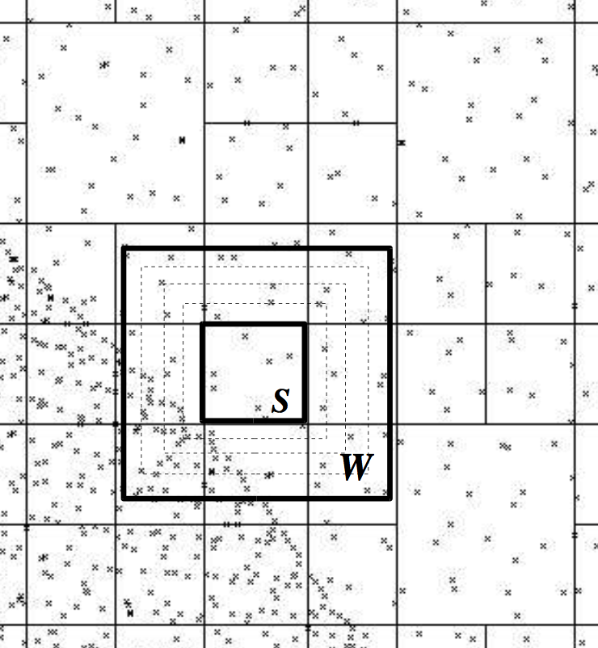 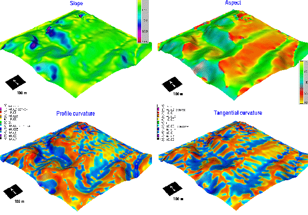
Modeling and analysis of surfaces from multitemporal observations
From digitized contours to lidar point clouds
Lidar technology transformed topography mapping in 21st century

Do we still need interpolation?
North Carolina lidar surveys
Coastal surveys started in 1996, second statewide survey just finished.Survey in 1999 included Jockey's Ridge dunes: dense, noisy scattered point cloud

North Carolina lidar surveys
Coastal surveys started in 1996, second statewide survey just finished.Survey in 1999 included Jockey's Ridge dunes: dense, noisy scattered point cloud

Regularized spline with tension for lidar
RST smoothing properties and quadtree segmentation made it suitable for generating high resolution elevation models from millions of points
Regularized spline with tension for lidar
By tuning the tension coupled with smoothing, we remove noise and derive topographic parameters at a desired level of detail:profile curvature and slope draped over surface with changing tension

GRASS temporal framework for DEM time series
- DEM time series for Jockey's Ridge dunes derived from data acquired by
- photogrammetry (1974-98),
- lidar (1999-2018),
- structure from motion from UAS imagery (2016-2018)
 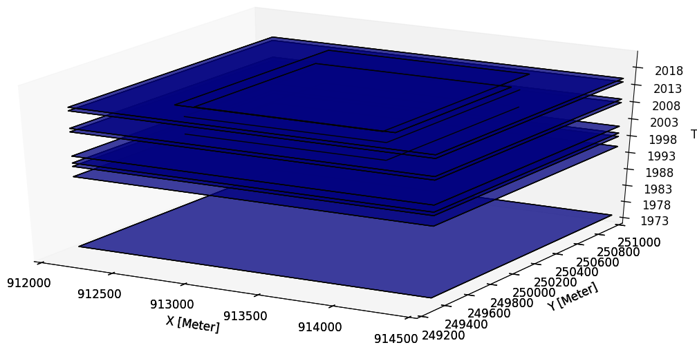
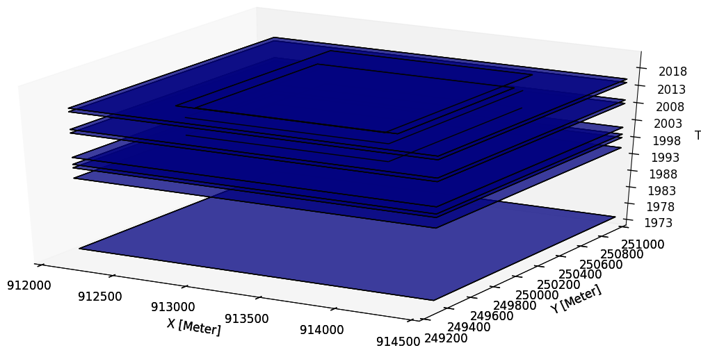


Gebbert, S., Pebesma, E., 2014. A temporal GIS for field based environmental modeling. Environmental Modelling and Software 53, 1-12.
DEM time series visualization
Jockey's Ridge 1974 - 2017: southward migration, landform transformation
from crescentic dune to sand starved, fast moving parabolic dune

DEM time series visualization
Contours time series
Contours capture the landform change but they are hard to read 16m
16m
 20m
20m
Space-Time cube visualization
DEM time series is converted into space-time voxel model in TGRASS and evolution of a contour is represented as isosurface: 16m and 20m


Post-hurricane Mathews ripples
Orthphoto from UAS survey, october 2016
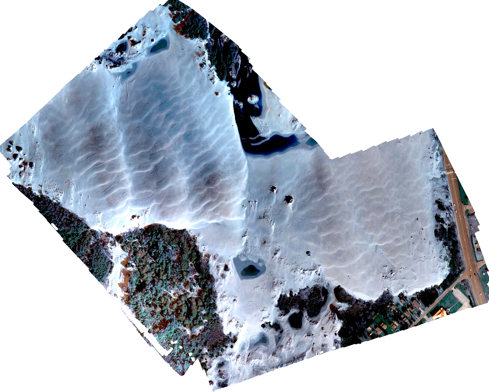
Annual dynamics from Planet imagery
Satellite imagery at 3m resolution, September 2017 - July 2018, captures impact of storm in March 2018 with large ripples similar to those observed post Mathews
Planet: world’s largest constellation of Earth-imaging (micro) satellites providing daily observations for entire Earth at 3m resolution
Jockey's Ridge evolution analysis
DEM time series: evolution quantified using TGRASS and surface analysis tools
- linear trend in loss of peak elevation at 0.3m per year
- accelerating horizontal migration from 3m/yr to 6m/yr
- total sand volume is stable, but the core (sand that has not moved) is shrinking
- vegetation increased, but dune still kills trees on the leeward side
- management challenges: dynamic feature confined to static park boundaries


Jockey's Ridge story
The 43 m high dune was a transient landform


Dune in early 1900 and in 2008, 2016
From observations to modeling of processes
Water flow, soil erosion, storm surge
Land surface controls water and sediment flow across landscapes
Critical processes and impacts: surface runoff, flooding, storm surge, soil erosion

 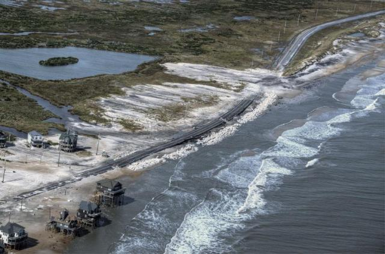
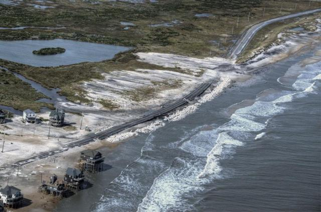
Water flow
Using surface gradients to compute flow accumulation: Evolution of water depth over complex terrain under steady rainfall and uniform surface conditions
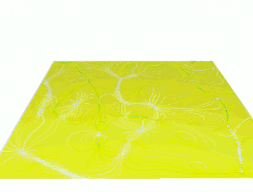
Geometry-based solution
Sediment transport
Combining flow accumulation and slope:
Evolution of sediment transport capacity

Geometry-based solution
Erosion and deposition
Net erosion and deposition computed as change in sediment transport capacity:
simple to compute in GIS, combined with parameters for landcover and soils
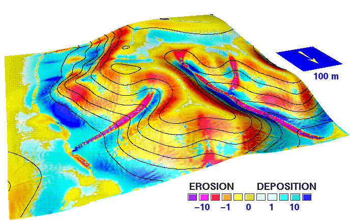 Unit Stream Power Based Erosion-Deposition, Mitasova et al. 1995, Mitas and Mitasova 1998
Path sampling of continuous fields
Next step: robust solution of shallow water flow equations and process-based sediment transport


Solver based on duality of particles and fields works for noisy surfaces, captures ponding in depressions
Modeling surface runoff and erosion/deposition
Impact of construction on erosion and deposition, limitations of stream buffer protection

High resolution water flow
Street level modeling of surface runoff: lidar-based DEM and path sampling


Ultra-high resolution water and erosion: UAS
Tilled fields

Urban topography
Multitemporal mapping of evolving landforms brings new insights into landscape dynamics
Next step - evolution of urban topography
2015 lidar updated with 2018 UAS data: forested are replaced by a new school

Flooding scenarios on-line
Corey While for smart cities serious game design
LINK TO MAPBOX
Coastal flooding
High resolution modeling is important 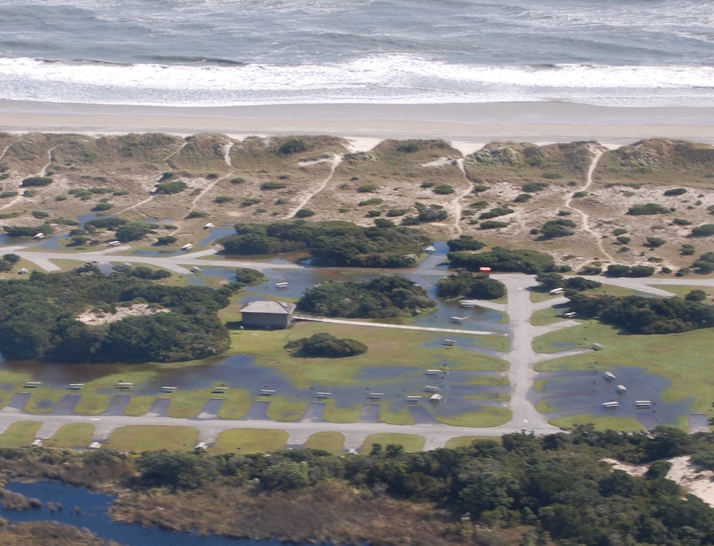
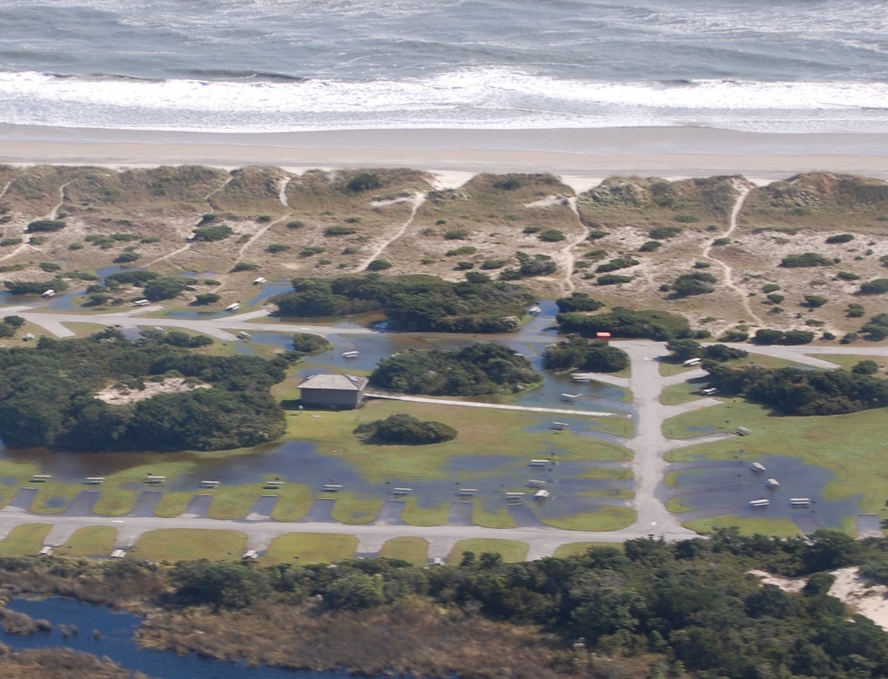
Improving storm surge flooding predictions
Nelson Tull for operational storm surge prediction using ADCIRC
Hurricane Matthew Hindcast number of buildings flooded: before enhancement: 2435;
after: 3886, a 60 percent increase.

full citation
Beyond bare ground
- lidar and geomorphons for individual trees extraction for viewscape analysis
- lidar point clouds voxel-based analysis - vegetation structure and patch index
Beyond bare earth surface: vegetation
Geomorphons (Jasiewicz, Stepinski 2013) for vegetation surfaces from lidar, UASindividual tree detection and trunk modeling (Tabrizian et al. 2018)


Beyond bare earth surface: urban topography
Solar irradiation during summer solstice at NCSU Centennial Campus

Beyond bare earth surface: vegetation voxel models
Generalized Fragmentation Index: slice of raw point cloud and slice of fragmentation index 3D raster


Beyond bare earth surface: vegetation voxel models
Slicing through fragmentation index 3D raster
 Petras, V., D. J. Newcomb, and H. Mitasova. 2017. Generalized 3D fragmentation index derived from lidar point clouds. In: Open Geospatial Data, Software and Standards 2(9). DOI 10.1186/s40965-017-0021-8
Petras, V., D. J. Newcomb, and H. Mitasova. 2017. Generalized 3D fragmentation index derived from lidar point clouds. In: Open Geospatial Data, Software and Standards 2(9). DOI 10.1186/s40965-017-0021-8
Tangible interface for surface analysis and process modeling
Tangible Landscape
Bringing people together around GIS: Tangible user interface for GRASS GIS
Designed to make working with geospatial data and simulations engaging, and fun

Petrasova, A. et al. (2018). Tangible Modeling with Open Source GIS. Second edition. Springer International Publishing. https://doi.org/10.1007/978-3-319-89303-7
How does it work?

Tangible Landscape couples a digital and a physical model through a continuous cycle of 3D scanning, geospatial modeling, and projection
Interactions

Coupling with 3D rendering

Design scenario analysis

Tangible Landscape for designers and researchers


Tangible Landscape for education

Tangible Landscape for communities
Platform for decision-making and science communication where people of different backgrounds can interact.

Tangible Landscape website:
tangible-landscape.github.io
TL wiki: github.com/tangible-landscape/grass-tangible-landscape/wiki
Open Science
Developing open source software and contributing to OSGeo projects:
GRASS GIS https://grass.osgeo.org/
Tangible Landscape tangible-landscape.github.io
Open access educational material:
NCSU GeoForAll Lab Courses and Workshops https://geospatial.ncsu.edu/geoforall/courses.html

Thank You!
Thank you all for your contributions to the field - data, methods, algorithms and tools, that helped to bring the discipline to its current thriving state